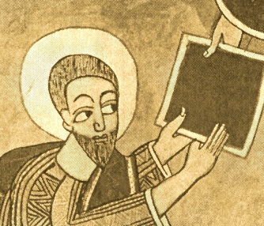

The Kebra Nagast
by E.A.W. Budge
[1922]
Contents
Start Reading
Page Index
Text [Zipped]
This is a translation of the Kebra Nagast ,
a tremendous collection of Ethiopian Biblical folklore.
The Kebra Nagast tells the legend of the
Queen of Sheba's son by King Solomon,
Menyelek (also known herein as Bayna-Lehkem and David II).
Menyelek engineers a plot to take the Tabernacle of the Law of God
(i.e., the Ark of the Covenant) to Ethiopia.
This is done at the behest of an Angel of God who predicts the downfall
of the kingdom of Solomon.
Comitted to writing in the fourteenth century,
the Kebra Nagast was derived from Ethiopian oral traditions
of the Queen of Sheba and her state marriage with Solomon.
The Kebra Nagast has been cited as one of the sources
of the Rastafarian movement because of its support of
Ethiopian theocracy.
Title Page
Preface
Contents
List of Plates
Introduction
I. The Manuscripts of the Kĕbra Nagast, etc.
II. Translation of the Arabic Version
III. Legends of the Queen of Sheba in the Kur’ân
IV. Modern Legends of Solomon and the Queen of Sheba
V. Summary of the Contents of the Kĕbra Nagast
The Kebra Nagast
1. Concerning the Glory of Kings
2. Concerning the Greatness of Kings
3. Concerning the Kingdom of Adam
4. Concerning Envy
5. Concerning the Kingdom of Seth
6. Concerning the Sin of Cain
7. Concerning Noah
8. Concerning the Flood
9. Concerning the Covenant of Noah
10. Concerning Zion
11. The Unanimous Declaration of the Three Hundred and Eighteen Orthodox Fathers
12. Concerning Canaan
13. Concerning Abraham
14. Concerning the Covenant of Abraham
15. Concerning Isaac and Jacob
16. Concerning Rôbêl (Reuben)
17. Concerning the Glory of Zion
18. How The Orthodox Fathers and Bishops Agreed
19. How this Book came to be Found
20. Concerning the Division of the Earth
21. Concerning the Queen of the South
22. Concerning Tâmrîn, the Merchant
23. How the Merchant Returned to Ethiopia
24. How the Queen made ready to set out on her Journey
25. How the Queen came to Solomon the King
26. How the King Held converse with the Queen
27. Concerning the Labourer
28. How Solomon gave Commandments to the Queen
29. Concerning the Three Hundred and Eighteen [Patriarchs]
30. Concerning how King Solomon swore to the Queen
31. Concerning the Sign which Solomon gave the Queen
32. How the Queen Brought forth and came to her own Country
33. How the King of Ethiopia travelled
34. How The Young Man Arrived in his Mother's Country
35. How King Solomon sent to his son the Commander of his Army
36. How King Solomon held Intercourse with his Son
37. How Solomon asked His Son questions
38. How the King planned to send away his son with the children of the nobles
39. How they made the Son of Solomon King
40. How Zadok the Priest gave Commands to David the King
41. Concerning the Blessing of Kings
42. Concerning the Ten Commandments
43. How the Men of the Army of Israel received [their] orders
44. How it is not a seemly thing to revile the King
45. How those who were sent away wept and made a plan
46. How they made a plan concerning Zion
47. Concerning the offering of Azâryâs (Azariah) and the King
48. How they carried away Zion
49. How his Father blessed his Son
50. How they bade farewell to his Father and how the city mourned
51. How he said unto Zadok the Priest, ''Go and Bring the Covering (or, Clothing) which is upon it (i.e. Zion)''
52. How Zadok the Priest Departed
53. How the Wagon was given to Ethiopia
54. How David [the King of Ethiopia] Prophesied and Saluted Zion
55. How the People of Ethiopia Rejoiced
56. Of the Return of Zadok the Priest, and the giving of the Gift
57. Concerning the Fall of Zadok the Priest
58. How Solomon Rose up to Slay Them
59. How the King Questioned an Egyptian, the Servant of Pharaoh
60. How Solomon Lamented for Zion
61. How Solomon Returned to Jerusalem
62. Concerning the Answer which Solomon made to them
63. How the Nobles of Israel Agreed [with the King]
64. How the Daughter of Pharaoh Seduced Solomon
65. Concerning the Sin of Solomon
66. Concerning the Prophecy of Christ
67. Concerning the Lamentation of Solomon
68. Concerning Mary, Our Lady of Salvation
69. Concerning the Question of Solomon
70. How Rehoboam Reigned
71. Concerning Mary, the Daughter of David
72. Concerning the King of Rome. (Constantinople)
73. Concerning the First Judgment of ’Adrâmî, King of Rômê
74. Concerning the King of Medyâm
75. Concerning the King of Babylon
76. Concerning Lying Witnesses
77. Concerning the King of Persia
78. Concerning the King of Moab
79. Concerning the King of Amalek
80. Concerning the King of the Philistines
81. How the son of Samson slew the son of the King of the Philistines
82. Concerning the going down of Abraham into Egypt
83. Concerning the King of the Ishmaelites
84. Concerning the King of Ethiopia and how he returned to his country
85. Concerning the Rejoicing of Queen Mâkĕdâ
86. How Queen Mâkĕdâ made her son King
87. How the nobles (or governors) of Ethiopia took the oath
88. How he himself related to his mother how they made him King
89. How the Queen talked to the Children of Israel
90. How Azariah praised the Queen and her city
91. This is what ye shall eat: the clean and the unclean
92. How they renewed the kingdom of David
93. How the men of Rômê destroyed the Faith
94. The first war of the King of Ethiopia
95. How the honourable estate of the King of Ethiopia was universally accepted
96. Concerning the Prophecy about Christ
97. Concerning the Murmuring of Israel
98. Concerning the Rod of Moses and the Rod of Aaron
99. Concerning the Two Servants
100. Concerning the Angels who rebelled
101. Concerning Him that existeth in Everything and Everywhere
102. Concerning the Beginning
103. Concerning the Horns of the Altar
104. More concerning the Ark and the Talk of the Wicked
105. Concerning the Belief of Abraham
106. A Prophecy concerning the Coming of Christ
107. Concerning His entrance into Jerusalem in Glory
108. Concerning the Wickedness of the Iniquitous Jews
109. Concerning His Crucifixion
110. Concerning His Resurrection
111. Concerning His Ascension And His Second Coming
112. How the Prophets foreshadowed Him in their Persons
113. Concerning the Chariot and the Vanquisher of the Enemy
114. Concerning the Return of Zion
115. Concerning the Judgement of Israel
116. Concerning the Chariot of Ethiopia
117. Concerning the King of Rômê and the King of Ethiopia
Colophon
Index
A List of the Passages from the Old and New Testaments, Quoted or Referred to in the Kebra Nagast
BACK